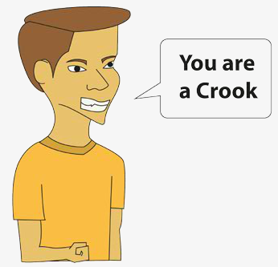

Croocks
A crook is a person who deceives others in order to take advantage of something.
I think the world is full of crooks, however when I think about the word crook, there is a class which represents it bette; the politicians. They are the best example of croocks I know.
Before the elections they come to you and say exactly what you want to listen to and what needs to be changed, but when they are elected they simply disappear.
Of course there are honest politicians, but they are going into extinction.
You cannot let a nation behind, due to your own interests.
I assume you know other group of croocks, don't you? Unfortunately, we can add to this group a lot og professionals as some salesmen, businessmen, doctors, policemen, lawyers, teachers, preachers or priests and so on.
What could we do to be safe oh these kings of people? Definitely, the best way is to avoid the contact, though I know we don't have a crystal ball which shows us who is a crook or who isn't.

Anyway, try to pay attention to some details.
When a person shows he or she is a very nice person and need to tell you all the time that does many good things to others, be carefull, this person may be a crook.
Certainly, there are good people in the word, but attention is always the best medicine to prevent crooks.
Don't talk about your life to people who you do not know. This advice seems to be stupid, but go to a bank line and stay there more than ten minutes. You are going to see many people talking about their lives to people they do not know.
Make your part and we will certainly have a better world to live.